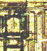

Hot
Carrier Effects
The phrases
'hot carriers' and 'hot electrons' refer to highly energetic carriers
that result from poor design of the device, high source-drain voltages,
and high channel electric fields in MOS devices.
A high
voltage across the source and the drain of a MOS device will accelerate
channel carriers into the drain's depletion region, causing them to
collide with lattice atoms that result in electron-hole pairs.
This phenomenon is known as impact ionization, with the displaced e-h
pairs also gaining enough energy to propel some of them towards the gate
oxide of the device and trap them there. A high gate voltage can also
pull hot carriers into the gate oxide and trap them there before they
even reach the drain region.
Trapped
carriers or charges in the gate oxide can
shift the threshold voltage and transconductance of the device.
The excess electron-hole pairs created by impact ionization can also
increase substrate current, which in gross cases can upset the balance
of carrier flow and facilitate latch-up.
See separate article on
hot carrier effects.
Junction
Burn-out
Junction
burn-out refers to the destruction of a p-n junction as a result of
excessive power dissipation from an electrical overstress (EOS) or
electrostatic discharge (ESD) event. It is usually in the form of
a silicon meltdown at the junction itself, causing the junction to
become open or shorted.
Junction
Spiking
See
Contact Migration.
Metal
Burn-out
Metal
burn-out refers to the gross destruction of a metal line from excessive
current or power dissipation. This is the most obvious attribute
of gross electrical overstress (EOS) damage, although not all
EOS-damaged devices will exhibit a metal burn-out.

Metal burn-outs
are often accompanied by carbonized plastic, metal reflow, and
discoloration of the metal around it. Metal lines that become open after
a metal burn-out are said to have 'fused.' The photo attached to
the article on EOS shows metal burn-outs. On the
right is another photo of a failure site with metal burn-outs.
Mobile
Ionic Contamination
Mobile
ionic contamination refers to the presence of mobile ions such as Na+,
Cl-, and K+ in the device structures of an integrated circuit.
These mobile ions can come from the environment, humans, wafer
processing materials, and packaging materials.
Mobile
ionic contamination is commonly observed in the gate oxide of a MOS
transistor. These ions can accumulate and cause charge build-ups
that can shift the gate threshold of the MOS transistor. Inversion
channels may also form in MOS transistors. In bipolar devices,
mobile ions can affect carrier concentrations, changing the beta of the
transistor.
Mobile
ions respond to temperature and voltage, so failures due to mobile ionic
contamination can be accelerated by burn-in. Mobile ionic
contamination failures can also be made to recover by subjecting the
device to unbiased bake, since this will redistribute the ions by
promoting their random movement. Thus, a device is most
likely a mobile ionic contamination failure if it fails after burn-in
but recovers after unbiased bake.
Oxide
Rupture
See
Dielectric Breakdown.
Silicon
Nodules
See separate article on
silicon nodules.
Slow
Charge Trapping
Slow charge trapping
refers to the long-term retention of electrons in the gate oxide of a
MOS device due to the presence of imperfections in the gate oxide
interface. These imperfections or 'traps' include structural
damage, defects, and impurities in the oxide. Thus, improved oxide
growth to minimize trap density will minimize the occurrence of
slow trapping.
Slow trapping
is prevalent in memory devices that require carrier movement in the
oxide for proper operation. Trapped charges in the oxide can shift the
threshold voltage of the device.
Time-Dependent
Dielectric Breakdown (TDDB)
See Oxide Breakdown and
Dielectric Breakdown.
<Back to Page 1>
<Back to Page 2>
See Also:
Package Failures; Failure
Analysis; Basic FA
Flows;
Reliability Models
HOME
Copyright
©
2001-2005
www.EESemi.com.
All Rights Reserved.